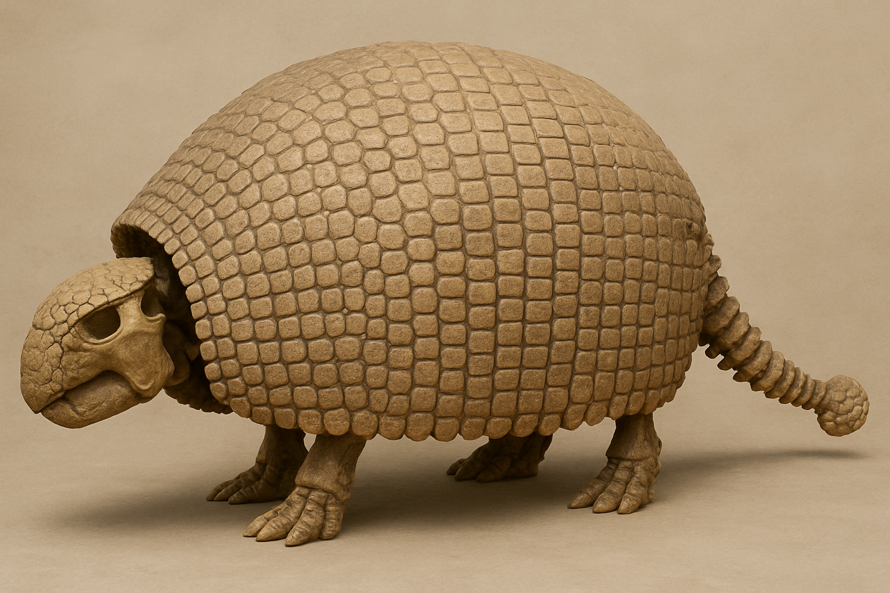
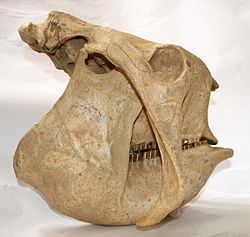
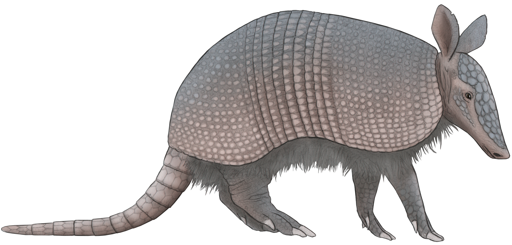

Museo De Paleontología SEMAHN
-
Inicio
-
Otras publicaciones
Cingulados
De la prehistoria a nosotros: los cingulados que dejaron su huella en Chiapas
Museo De Paleontología SEMAHN
Inicio
Otras publicaciones
De la prehistoria a nosotros: los cingulados que dejaron su huella en Chiapas
Los cingulados son un orden de mamíferos placentarios naturales del continente americano cuyas especies son llamadas armadillos. Las familias Dasypodidae y Chlamyphoridae son las únicas que sobreviven hoy en día. Durante el Pleistoceno y períodos anteriores, además de los modernos armadillas existieron también armadillos gigantes, como los gliptodontos, que se diferenciaron en el Eoceno Superior y que tenían un cráneo y un caparazón formado por muchas piezas pequeñas fusionadas y, en ocasiones, una cola en forma de maza. Muestran una notable convergencia con las tortugas y algunos dinosaurios.

Desde hace varios millones de años, este peculiar grupo de mamíferos habita nuestro continente. Su nombre alude a la "armadura" que recubre su cuerpo dorsalmente. Los acorazados o cingulados pertenecen a un grupo mayor de mamíferos que se denominan xenarthros, un grupo de mamíferos exclusivo del continente americano. Se diferencian de los otros representantes del grupo, y de todos los demás mamíferos, por la presencia de pequeños osículos (osteodermos) en su piel que articulan entre sí formando un caparazón dorsal.
Este caparazón está separado en tres estructuras: un escudete cefálico, que recubre la cabeza; una coraza dorsal que recubre la mayor parte del cuerpo dorsal y lateralmente; y un estuche caudal que recubre la cola. En las especies actuales, estos osteodermos están recubiertos por escamas córneas y están asociados a otras estructuras típicas de la piel de los mamíferos, como pelos y glándulas sudoríparas y sebáceas. Esta combinación es única entre todos los animales conocidos hasta el momento. La coraza dorsal de los armadillos es móvil y tiene la capacidad de flexionarse en su zona media. Tiene dos escudos fijos (escapular y pélvico) entre los cuales se intercala una región compuesta por hileras de osteodermos parcialmente solapadas (bandas móviles) que funcionan como un "fuelle", permitiendo que se expandano se plieguen.
El cráneo es alargado y tubular o aplanado, y la mandíbula es delgada y alargada. Sus dientes son simples y, a diferencia de la mayoría de los mamíferos, son todos iguales de forma cilíndrica y crecen durante toda la vida. Los armadillos más antiguos se hallaron en Brasil y en la Patagonia argentina y vivieron hace unos 50 millones de años. Los primeros armadillos pertenecían a grupos ya extintos a partir de los cuales habrían evolucionado muchos de los grupos que hoy conocemos.

Glyptodon es un género extinto de grandes mamíferos acorazados pertenecientes a la subfamilia Glyptodontinae, emparentado con armadillos actuales, que vivió durante la época del Pleistoceno en América del Sur. Con su caparazón óseo redondeado y extremidades agazapadas, recuerda superficialmente a las tortugas, y a los dinosaurios anquilosaurios, como ejemplo de la evolución convergente de linajes distantes hacia formas similares.

Dasypus bellus es una especie extinta de armadillo de la familia Dasypodidae que existió en Norte y Suramérica durante el Plioceno y Pleistoceno. La especie vivió desde hace 1,8 millones de años hasta hace 11,000 años. Era ligeramente más grande que la especie relacionada, el armadillo de nueve bandas (Dasypus novemcinctus). Sus fósiles se han hallado desde Bolivia, Argentina y Brasil hasta los estados estadounidenses de Florida, Nuevo México, Iowa e Indiana.